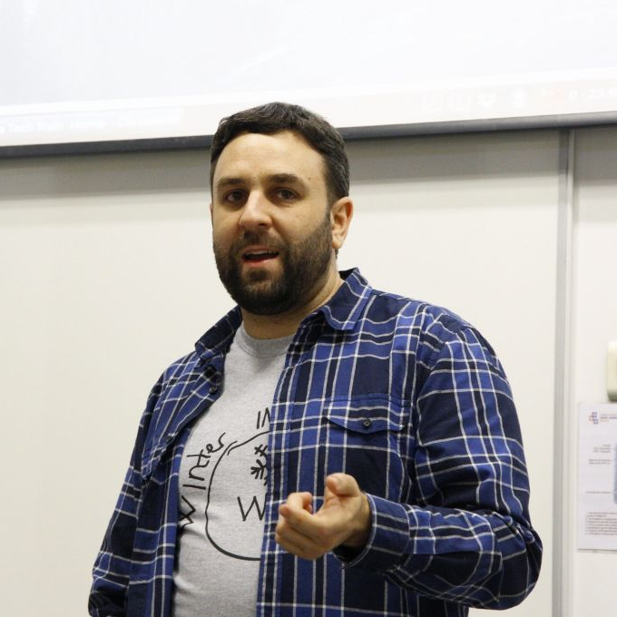

Speakers

Agustín Herranz Cecilia
Python Tooling
Usar 'sudo pip install' siempre es mala idea, más aún si lo que queremos es instalar aplicaciones Python en nuestro ordenador. Te contaré como funcionan las dependencias en Python. Por qué es mala idea instalar cosas dentro del Python del sistema, en el entorno de tu propio usuario. Qué son y por que es mejor usar virtualenvs. Y de como puedes despreocuparte de lo anterior usando pipx.
Aitor Gastaminza / Alex Gasulla / Victoriano Giralt / Ramón Martínez / Ernesto Sánchez
Comunidad, sociedad y cultura
En Febrero se forma COVIDWarriors y proponen traer robots a España para ayudar a hacer PCRs. Primero se dibujan los esquemas de proceso, abrir un GitHub y parametrizar los reservorios que se usarán en cada laboratorio. Se desarrollan funciones para pipetear los reactivos, se crean clases para guardar información de los reactivos y se programan las rutinas. Se realiza una primera versión de plataforma en excel y línea de comandos que permite registrar las muestras y asegurar la trazabilidad. Posteriormente, se realiza una segunda versión en plataforma Django que además permite comunicarse con el robot usando la librería "requests".
Ana Esteban Gutiérrez
Computación científica
En el mundo de la Astrofísica, necesitamos continuamente lenguajes de programación para poder recrear nuestras simulaciones o para analizar datos de observaciones.
En mi campo, utilizo Python diariamente para simular, analizar y comparar mapas de magnificación de microlensing en cuásares para poder estudiar las propiedades de la materia oscura o el movimiento de galaxias. A partir de modelos matemáticos y estadística, obtenemos resultados que luego se compararán con datos observacionales sacados a partir de aquellos sistemas que presenten el efecto lente gravitatoria.

Andrea Morales Garzón / Miguel López Pérez
Ciencia de datos, Machine Learning e IA
¿Eres un amante de la visualización de datos? ¿Y del Procesamiento del Lenguaje Natural (NLP)? ¿Y de la poesía? Pues estás de suerte. Con esta charla, queremos mostrar los pasos básicos a seguir para resolver un problema de procesamiento de lenguaje natural, que pueden ser aplicados en cualquier problema de esta área con tanto por explorar. Abordaremos tareas clásicas de NLP, como el análisis de sentimientos, búsquedas de similitud en los propios datos y algunas visualizaciones del vocabulario.

Andros Fenollosa Hurtado
Python Core
"Ya se objetos, ¿para que usar programación funcional?" Si lees el título y pasa esta frase por tu cabeza... ¡necesitas urgentemente ver esta charla! Aprovecharé la plasticidad de Python para dar una breve explicación de que es la programación funcional, además de listar sus diferencias respecto al paradigma orientado a objetos, enseñar sus superpoderes, algunos ejemplos reales y ver otros lenguajes que pueden ayudarte a mejorar como desarrollador.
Antònia Tugores / Biel Frontera Borrueco / Jaume Perelló Perelló
Comunidad, sociedad y cultura
Presentamos un proyecto 100% Python desarrollado durante el confinamiento del mes de marzo y que han llegado a utilizar más de 1.000 usuarios de Telegram: un bot para seguir la evolución de la pandemia del coronavirus. El bot accede a diferentes fuentes de datos para ofrecer gráficas de la evolución epidemiológica a nivel mundial por países, a nivel español por comunidades autónomas, a nivel italiano por regiones y a nivel francés por departamentos.

Antonio José Soto Rodriguez
Ciencia de datos, Machine Learning e IA
Todavía a día de hoy es bastante común encontrarse con clientes o colegas que perciben los modelos de Machine Learning como una caja negra capaz de realizar magia o alquimia para darle al cliente lo que quiere. Sin embargo, la cruda realidad es que sin una comprensión razonable de como funcionan los modelos de ML, los proyectos del mundo real rara vez tienen éxito. Teniendo en cuenta que cualquier proyecto de este estilo tiene un componente de negocio muy relevante y que el objetivo final de estos modelos es que tomen decisiones de forma automática por los usuarios, estos tienen el derecho de plantear preguntas como “¿Cómo puedo confiar en este modelo?” o “¿Cómo toma las decisiones el modelo?” Responder a estas preguntas puede convertirse en todo un reto y es una de las áreas donde se está invirtiendo más esfuerzos hoy en día.
Davide Fiocco
Ciencia de datos, Machine Learning e IA
Python provides sophisticated frameworks to develop machine learning models that can perform a variety of useful tasks.
To put those models to good use, one frequently needs to encapsulate them in web applications, so to make them available to human users and other applications.
I will show how a dockerized web application serving a ML model can be coded in pure Python, building its frontend with the streamlit library and the backend with the FastAPI library (no Javascript, no HTML/CSS needed!).

Gajendra Deshpande
Redes y Seguridad
A recent study by the CheckPoint Research has recorded over 1,50,000 cyber-attacks every week during the COVID-19 pandemic. There has been an increase of 30% in cyber-attacks compared to previous weeks. Cyber forensics is a field that deals with the investigation of digital crimes by analyzing, examining, identifying, and recovering digital evidence from electronic devices and producing them in the court of law. In this talk, we will learn to use Python for the investigation of digital crimes.
Jordi Contestí
Python Core
Aunque Python es un lenguaje con tipificación dinámica, desde hace tiempo tenemos la posibilidad de utilizar tipificación estática de forma opcional. De esta forma, en la futura versión 3.9 las funcionalidades asociadas a la tipificación estática van a ampliarse. En esta charla explicaremos qué nos ofrecerá la tipificación estática al completo en la versión 3.9 mediante ejemplos de código, daremos recomendaciones sobre su uso y veremos estrategias para introducirla en nuestro código.
Manuel Garrido Peña
Ciencia de datos, Machine Learning e IA
En esta charla vamos a hacer una introduccion a un aspecto del proceso de Data Science que esta experimentando un crecimiento muy rápido en los ultimos años, AutoML, que consiste en el conjunto de aplicaciones que nos ayudan a automatizar las partes más tediosas del desarrollo de modelos predictivos, como seleccion de modelos u optimization de hiperparametros.

Mar Bartolomé
Comunidad, sociedad y cultura
It's not secret that the hardest problems in computer science are cache invalidation and naming things... oh, and hiring.
In our industry we've developed a culture and a mysticism around hiring, with certain rituals and practices which are often so detached from
reality that you see numerous jokes and memes about the subject.
Hiring is a difficult problem, yet important to get right. Many developers are faced with the challenge of hiring other team members, without much clue into how to proceed, and end up just copying the well known rituals without stopping to analyse their effectiveness or implications. Often, this results in hindering both companies and candidates, especially those of under represented demographics.
In this talk I'll share my experiences and personal opinions both as a candidate and as an interviewer, analyze the implications of popular hiring tactics, and discuss what I consider effective ones, in order to hire the right developers for your team with minimum hassle for both sides.
Miguel Ángel Rico Blanco
Videojuegos y Diseño
Python Arcade es una librería para el desarrollo fácil de videojuegos 2D en python. Veremos la instalación de esta librería, el pintado de objetos en pantalla y el bucle principal de arcade Python, incluida la entrada de usuario y de los assets gráficos y de sonido. Veremos algunos ejemplos tanto en 2D como en vista isométrica.Como ninguno somos artistas necesitaremos de assets gráficos de calidad (kenney.nl) y un programa de diseño para el mapa (mapeditor.org).
Naomi Ceder
Core del lenguaje
En Python hay muchos tipos de secuencia - listas, tuplas, cadenas, etc., y una caractéristica poderosa de ellos es el uso de rebanadas
(slices). Pero aunque son poderosas, su verdadera carácter no es bien conocida.
Después de una breve explicación de la notación de rebanadas y de varios trucos para manipular las secuencias con ellas, vamos a hacer algunos experimentos para entender qué son en realidad las rebanadas y cómo funcionan en Python.

Nilo Ney Coutinho Menezes
Web
Microservices and serverless are hot topics in web development communities that when combined increase the potential for developers to make software faster and to host it much cheaper than traditional virtual private servers. This talk aims to present a minimal set of tools to start developing Serverless Microservices using Python. With the serverless framework configured for Python, developing a new microservice API becomes very easy. The framework provides a set of tools to pack Python dependencies and also deploys the required infrastructure to the cloud, enabling infrastructure as code since the start of the project. Although the serverless framework is used during this presentation, no other Python framework is required, making it as easy as possible to start with plain Python code.